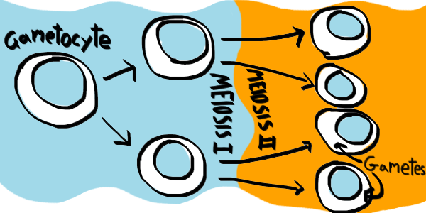
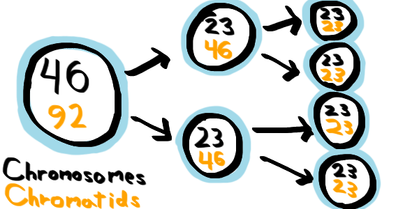
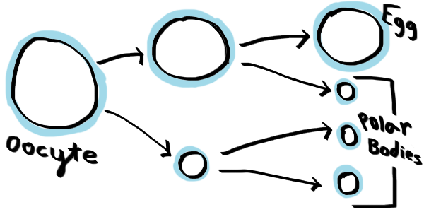
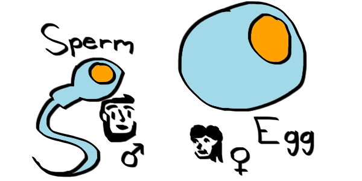
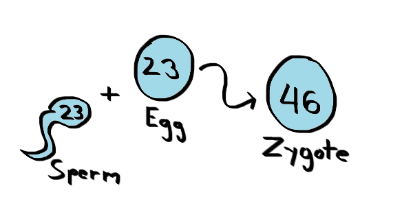
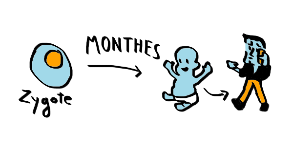
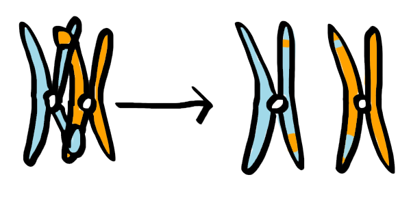
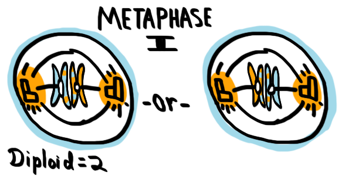

Fertilization and Genetic Variation
Now you should have a pretty good idea of how meiosis actually happens. You have a diploid of two-chromatid chromosomes that pair up with one another, exchange information, and separate into two cells. Then then each chromosome will split at the level of chromatids into two more cells each for a total of four. Recall this image:
 We started with one gametocyte, and ended with four gametes.The Two Gametes
During meiosis, you start with one diploid gametocyte that splits up into two haploid cells. That will further split into a total of four haploid cells. Here's a picture to illustrate this in humans.
 Human meiosis simplified. Black is the number of chromosomes, and orange is the number of chromatids.During meiosis, we start with a gametocyte, if you recall. There are two types of gametocytes, one for each gender. In men, they are spermatocytes, and in women, they are oocytes.
At the end of meiosis, these gametocytes turn into for gametes. That is, one spermatocyte becomes one sperm cell (a type of gamete). On the other hand, one oocyte becomes one large egg cell and three small polar bodies. These three polar bodies are discarded.
 The meiosis of oocytes is different by size.WERE YOU PAYING ATTENTION
How many chromosomes are in a human polar body?
What is a Zygote?
We will start with a sperm cell and an egg cell. All it takes is one sperm and one egg in this case, just one. The polar bodies are vanished as there is no need for them, so there exists much more sperm from men than eggs from women.
 The two types of gametes, sperm and egg.Once a sperm cell comes together with an egg cell, you form a special cell called a zygote.
 Each kind of gametocyte comes together into a zygote.Notice that this cell now has 46 chromosomes, so that is 23 from your mom and 23 from your dad. The process of combining the sperm and egg is called fermentation.
One Cell becomes Trillions!
Once you have a zygote formed, you have unlocked a key to an entire human being! That is, this single cell will multiply and multiply through a process called mitosis until it forms an entire baby. That baby will have traits from its mom and traits from its dad because the zygote has half the chromosomes from each.
Mitosis can be thought of as cell cloning, because it creates two cells that are exactly alike, so your traits exist in all parts of your body! All from one little zygote.
 Each kind of gametocyte comes together into a zygote.Just consider for a moment how amazing it is that your entire body all started out as one small little cell!
CHALLENGE QUESTION
Which best describes a zygote?
Genetic Variation
Everyone is different, and now you probably have an idea of how using meiosis. To have variety in people, you need to have different DNA. Remember that chromosomes are just DNA packed tightly, so in reality, you need to have different chromosomes.
Here are the three ways that we have different chromosomes:
- Crossing over
- Independent assortment
- Random fertilization
To remind you, crossing over is when chromosomes swap parts, creating very different new chromosomes.
 A reminder of crossing over during prophase I.Independent assortment is the fact that there are two possible orders (for each pair) that the chromosomes can be ordered during metaphase I.
 Independent assortment of metaphase I.Random fertilization is the fact that only one of the oocytes (chosen at random) gets to be an egg, and that it takes just one sperm (any randomly made sperm) to fertilize the egg.
Go Back Home Move to the Next Section